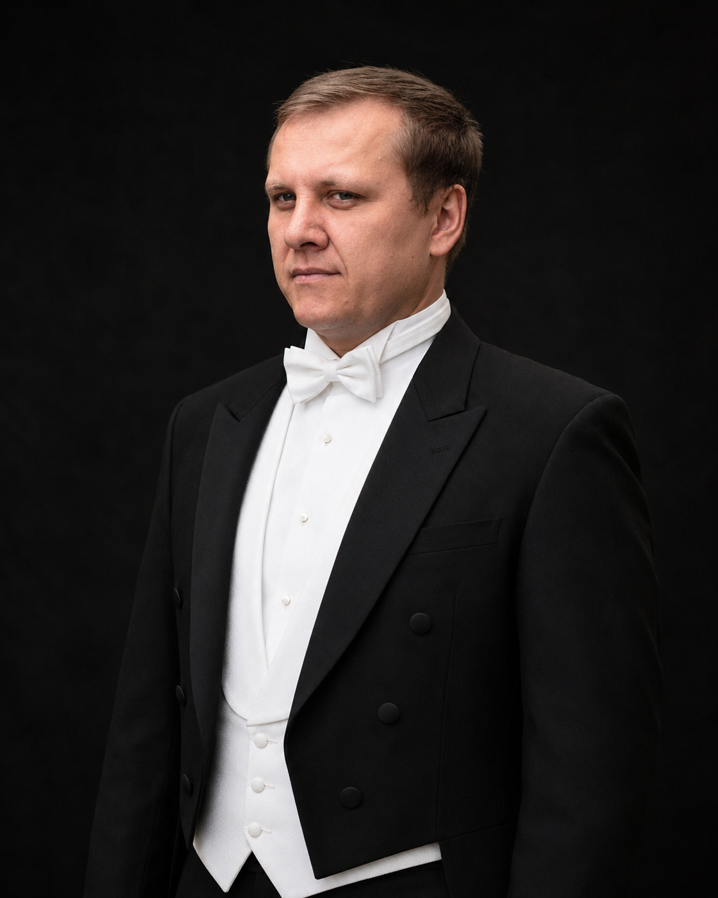

Россия
Большой театр России, NOVAT, Новая опера, Пермский театр оперы и балета, Михайловский театр, Шаляпинский фестиваль.

Biography / profile
Профиль
Оперный баритон, солист Новосибирского театра оперы и балета, приглашённый солист Большого театра России.
Родился в Новополоцке Витебской области. В 2000 году окончил Тульский колледж искусств имени А. С. Даргомыжского, в 2005 году — Государственный музыкально-педагогический институт имени М. М. Ипполитова-Иванова. В 2005–2006 годах был солистом Московского театра «Новая опера» имени Е. В. Колобова. С 2006 года работает в Новосибирском театре оперы и балета.
Площадки
Большой театр России, NOVAT, Новая опера, Пермский театр оперы и балета, Михайловский театр, Шаляпинский фестиваль.
Teatro Real, Opéra de Lyon, Festival d’Aix-en-Provence, Theater Bonn, Staatstheater Darmstadt, Stadttheater Klagenfurt, National Theatre Prague.
Metropolitan Opera, Opera Australia / Sydney Opera House, Teatro di San Carlo.